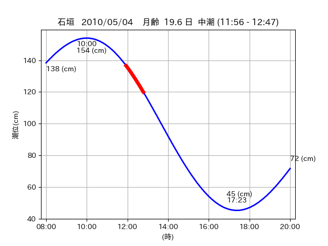

<!DOCTYPE html>
<html>
<head>
    
    <meta http-equiv="content-type" content="text/html; charset=UTF-8" />
    
        <script>
            L_NO_TOUCH = false;
            L_DISABLE_3D = false;
        </script>
    
    <style>html, body {width: 100%;height: 100%;margin: 0;padding: 0;}</style>
    <style>#map {position:absolute;top:0;bottom:0;right:0;left:0;}</style>
    <script src="https://cdn.jsdelivr.net/npm/leaflet@1.9.3/dist/leaflet.js"></script>
    <script src="https://code.jquery.com/jquery-3.7.1.min.js"></script>
    <script src="https://cdn.jsdelivr.net/npm/bootstrap@5.2.2/dist/js/bootstrap.bundle.min.js"></script>
    <script src="https://cdnjs.cloudflare.com/ajax/libs/Leaflet.awesome-markers/2.0.2/leaflet.awesome-markers.js"></script>
    <link rel="stylesheet" href="https://cdn.jsdelivr.net/npm/leaflet@1.9.3/dist/leaflet.css"/>
    <link rel="stylesheet" href="https://cdn.jsdelivr.net/npm/bootstrap@5.2.2/dist/css/bootstrap.min.css"/>
    <link rel="stylesheet" href="https://netdna.bootstrapcdn.com/bootstrap/3.0.0/css/bootstrap-glyphicons.css"/>
    <link rel="stylesheet" href="https://cdn.jsdelivr.net/npm/@fortawesome/fontawesome-free@6.2.0/css/all.min.css"/>
    <link rel="stylesheet" href="https://cdnjs.cloudflare.com/ajax/libs/Leaflet.awesome-markers/2.0.2/leaflet.awesome-markers.css"/>
    <link rel="stylesheet" href="https://cdn.jsdelivr.net/gh/python-visualization/folium/folium/templates/leaflet.awesome.rotate.min.css"/>
    
            <meta name="viewport" content="width=device-width,
                initial-scale=1.0, maximum-scale=1.0, user-scalable=no" />
            <style>
                #map_c14008415286dc545f556647cf1402c8 {
                    position: relative;
                    width: 2048.0px;
                    height: 1600.0px;
                    left: 0.0%;
                    top: 0.0%;
                }
                .leaflet-container { font-size: 1rem; }
            </style>
        
</head>
<body>
    
    
            <div class="folium-map" id="map_c14008415286dc545f556647cf1402c8" ></div>
        
</body>
<script>
    
    
            var map_c14008415286dc545f556647cf1402c8 = L.map(
                "map_c14008415286dc545f556647cf1402c8",
                {
                    center: [24.434, 123.845],
                    crs: L.CRS.EPSG3857,
                    ...{
  "zoom": 12,
  "zoomControl": true,
  "preferCanvas": false,
}

                }
            );

            

        
    
            var tile_layer_a3b1eb8ef8f33e4dad5f1162563a0561 = L.tileLayer(
                "https://cyberjapandata.gsi.go.jp/xyz/seamlessphoto/{z}/{x}/{y}.jpg",
                {
  "minZoom": 0,
  "maxZoom": 18,
  "maxNativeZoom": 18,
  "noWrap": false,
  "attribution": "\u5730\u7406\u9662\u5730\u56f3",
  "subdomains": "abc",
  "detectRetina": false,
  "tms": false,
  "opacity": 1,
}

            );
        
    
            tile_layer_a3b1eb8ef8f33e4dad5f1162563a0561.addTo(map_c14008415286dc545f556647cf1402c8);
        
    
            var marker_a65c6a3bb806701f6081a49634078dc3 = L.marker(
                [24.4742, 123.8037],
                {
}
            ).addTo(map_c14008415286dc545f556647cf1402c8);
        
    
            var icon_cc149ed136e38853a3f40e5f7cc76ecd = L.AwesomeMarkers.icon(
                {
  "markerColor": "orange",
  "iconColor": "white",
  "icon": "info-sign",
  "prefix": "glyphicon",
  "extraClasses": "fa-rotate-0",
}
            );
        
    
        var popup_944fa2241584fc2174873d6fc46289f8 = L.popup({
  "maxWidth": "100%",
});

        
            
                var html_7e617fc75fbc52703600fa28f8d7be4d = $(`<div id="html_7e617fc75fbc52703600fa28f8d7be4d" style="width: 100.0%; height: 100.0%;"><table><tr><td></td></tr><tr><td><center>20100504 No.1 </center></table></td></tr></table</div>`)[0];
                popup_944fa2241584fc2174873d6fc46289f8.setContent(html_7e617fc75fbc52703600fa28f8d7be4d);
            
        

        marker_a65c6a3bb806701f6081a49634078dc3.bindPopup(popup_944fa2241584fc2174873d6fc46289f8)
        ;

        
    
    
                marker_a65c6a3bb806701f6081a49634078dc3.setIcon(icon_cc149ed136e38853a3f40e5f7cc76ecd);
            
    
            var poly_line_aa747ba80983f24d2966fa3cf8558cf7 = L.polyline(
                [[24.4742, 123.8037], [24.4794, 123.8067]],
                {"bubblingMouseEvents": true, "color": "#FF00FF", "dashArray": null, "dashOffset": null, "fill": false, "fillColor": "#FF00FF", "fillOpacity": 0.2, "fillRule": "evenodd", "lineCap": "round", "lineJoin": "round", "noClip": false, "opacity": 1.0, "smoothFactor": 1.0, "stroke": true, "weight": 3}
            ).addTo(map_c14008415286dc545f556647cf1402c8);
        
    
            var marker_65544c05f9516257861be840da47f1ea = L.marker(
                [24.48, 123.8236],
                {
}
            ).addTo(map_c14008415286dc545f556647cf1402c8);
        
    
            var icon_d680765499e400b03add0e5380fd1215 = L.AwesomeMarkers.icon(
                {
  "markerColor": "orange",
  "iconColor": "white",
  "icon": "info-sign",
  "prefix": "glyphicon",
  "extraClasses": "fa-rotate-0",
}
            );
        
    
        var popup_8718355244540b96c686d8471ffe1781 = L.popup({
  "maxWidth": "100%",
});

        
            
                var html_d051579a47ac3bbd1cf2634e6aa89371 = $(`<div id="html_d051579a47ac3bbd1cf2634e6aa89371" style="width: 100.0%; height: 100.0%;"><table><tr><td></td></tr><tr><td><center>20100504 No.2 </center></table></td></tr></table</div>`)[0];
                popup_8718355244540b96c686d8471ffe1781.setContent(html_d051579a47ac3bbd1cf2634e6aa89371);
            
        

        marker_65544c05f9516257861be840da47f1ea.bindPopup(popup_8718355244540b96c686d8471ffe1781)
        ;

        
    
    
                marker_65544c05f9516257861be840da47f1ea.setIcon(icon_d680765499e400b03add0e5380fd1215);
            
    
            var poly_line_04ccf52c6786ad72356abcf030a1a072 = L.polyline(
                [[24.48, 123.8236], [24.4772, 123.8308]],
                {"bubblingMouseEvents": true, "color": "#00FFFF", "dashArray": null, "dashOffset": null, "fill": false, "fillColor": "#00FFFF", "fillOpacity": 0.2, "fillRule": "evenodd", "lineCap": "round", "lineJoin": "round", "noClip": false, "opacity": 1.0, "smoothFactor": 1.0, "stroke": true, "weight": 3}
            ).addTo(map_c14008415286dc545f556647cf1402c8);
        
    
            var marker_d2d1a7b40f9808a0447b661d47e38820 = L.marker(
                [24.4328, 123.8468],
                {
}
            ).addTo(map_c14008415286dc545f556647cf1402c8);
        
    
            var icon_b57474413f45e96502b4989c214d91bb = L.AwesomeMarkers.icon(
                {
  "markerColor": "orange",
  "iconColor": "white",
  "icon": "info-sign",
  "prefix": "glyphicon",
  "extraClasses": "fa-rotate-0",
}
            );
        
    
        var popup_98c9c77d71f75871371b0e50123ca45b = L.popup({
  "maxWidth": "100%",
});

        
            
                var html_72f1bb71974e4f9c9ec60840f9c2bb5b = $(`<div id="html_72f1bb71974e4f9c9ec60840f9c2bb5b" style="width: 100.0%; height: 100.0%;"><table><tr><td></td></tr><tr><td><center>20100504 No.3 </center></table></td></tr></table</div>`)[0];
                popup_98c9c77d71f75871371b0e50123ca45b.setContent(html_72f1bb71974e4f9c9ec60840f9c2bb5b);
            
        

        marker_d2d1a7b40f9808a0447b661d47e38820.bindPopup(popup_98c9c77d71f75871371b0e50123ca45b)
        ;

        
    
    
                marker_d2d1a7b40f9808a0447b661d47e38820.setIcon(icon_b57474413f45e96502b4989c214d91bb);
            
    
            var poly_line_a46001eda1d0a7cc351e3ec32eb0bf98 = L.polyline(
                [[24.4328, 123.8468], [24.4359, 123.8427]],
                {"bubblingMouseEvents": true, "color": "#FF00FF", "dashArray": null, "dashOffset": null, "fill": false, "fillColor": "#FF00FF", "fillOpacity": 0.2, "fillRule": "evenodd", "lineCap": "round", "lineJoin": "round", "noClip": false, "opacity": 1.0, "smoothFactor": 1.0, "stroke": true, "weight": 3}
            ).addTo(map_c14008415286dc545f556647cf1402c8);
        
</script>
</html>